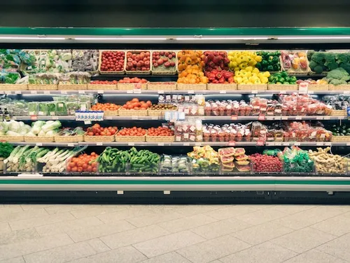

Get To Know About Our Grocies Supermarket
Grocies Main Supermarket
 Description:Our main supermarket is in Colombo 02. It comprises organic vegetables and fruits, daily groceries, and other household essentials. This supermarket provides a premium shopping experience, and customers can also estimate online shopping with same-day delivery. Grocies supermarket offers loyalty customer registrations, where customers can enjoy promotions and discounts. Colombo 02, Grocies main supermarket also holds events such as free giveaways, and green environmental programs for customers. Contact us at 43/11, Union Place, Colombo 02, or +11 232 1323 for more information. This supermarket opens daily from 8.00 am to 11.00 pm.
Map:Grocies Gampaha Sub-branch
Description:This sub-branch supermarket is in the Gampaha area. It comprises organic vegetables and fruits, daily groceries, and other household essentials. This supermarket provides a premium shopping experience, and customers can also estimate online shopping with same-day delivery. Grocies supermarket offers loyalty customer registrations, where customers can enjoy promotions and discounts. Grocies sub-branch, Gampaha also holds events such as free giveaways, and green environmental programs for customers. Contact us at 99/1, Mari Street, Gampaha, or +33 658 1112 for more information. This supermarket opens daily from 8.00 am to 11.00 pm.
Map:Grocies Kandy Sub-branch
Description:This sub-branch supermarket is in the Kandy area. It comprises organic vegetables and fruits, daily groceries, and other household essentials. This supermarket provides a premium shopping experience, and customers can also estimate online shopping with same-day delivery. Grocies supermarket offers loyalty customer registrations, where customers can enjoy promotions and discounts. Grocies branch in Kandy also holds events like free giveaways, musical shows, and green environmental programs for customers. Contact us at 22/33, Jaya Street, Kandy, or +33 782 9237 for more information. This supermarket opens daily from 8.00 am to 11.00 pm.
Map:Our Main Services
| Service Name | Description | Special features |
|---|---|---|
| : Online shopping | Shop daily groceries online | delivery/ pickup |
| Home delivery. | Deliver groceries to the provided address | Same-day delivery |
| Loyalty customer program | Earn points by shopping | Discounts and promotions |